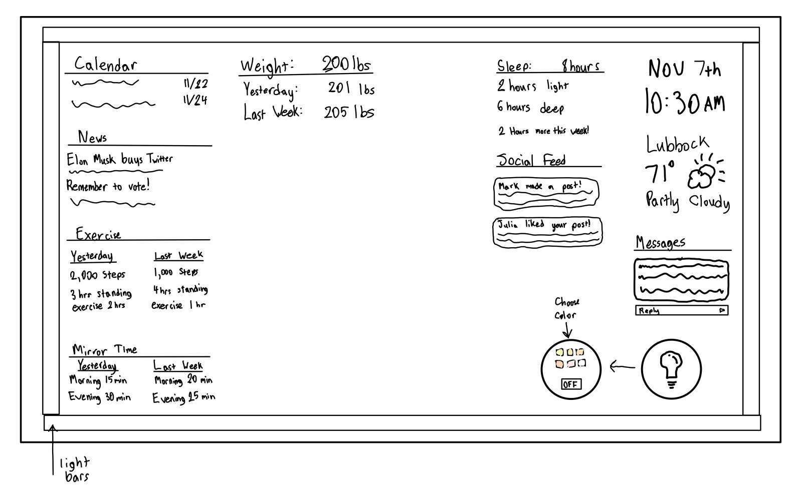

Matthew Rice Project 2
For a C

- For this interface I plan to display the users weight for their health information, and it will be moved to the other side.
- There will be a bar around the entire interface that will light up for the advanced feature.
- Overall the goal of this design is to be simple and very easy for the user to quickly get information from it.
- The color design will mainly be black and white with some colors in the weather and on the light bulb itself.
For a B
- I implemented my mirror using p5.js because p5.js was much easier to implement the features that I wanted to.
- I decided to remove the border around each section that I had in my sketch and instead had a horizontal line seperate them.